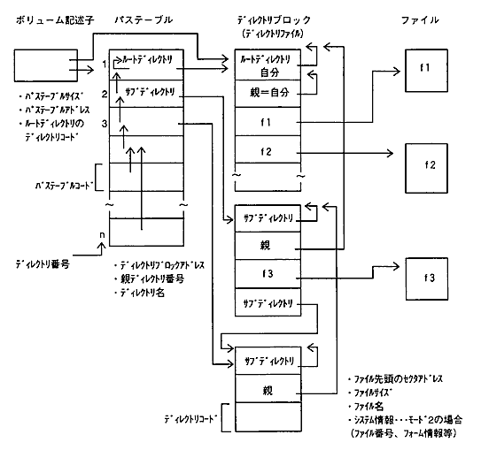
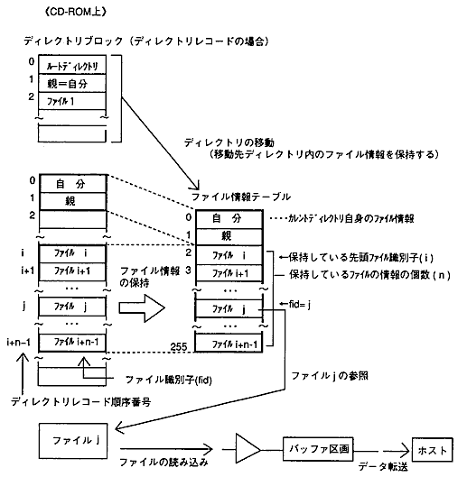

★PROGRAMMER'S GUIDE
★CD通信I/F(CDパート)
★PROGRAMMER'S GUIDE
★CD通信I/F(CDパート)
図6.1 CD-ROM(ISO9660)におけるファイル管理のデータ構造

図6.2 CDブロックファイルシステムの構造

絞り条件
動作 | 絞り条件 |
|---|---|
ディレクトリの移動 | ・絞りフレームアドレス範囲を設定する。 |
ファイル情報の保持 | |
ファイルの読み込み | ・絞りフレームアドレス範囲（FAD範囲）を設定する。 |
絞りと接続したバッファ区画
ファイルアクセスの前に、バッファ区画のセクタをクリアする。
★PROGRAMMER'S GUIDE
★CD通信I/F(CDパート)